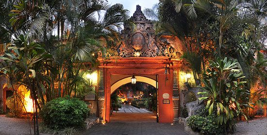
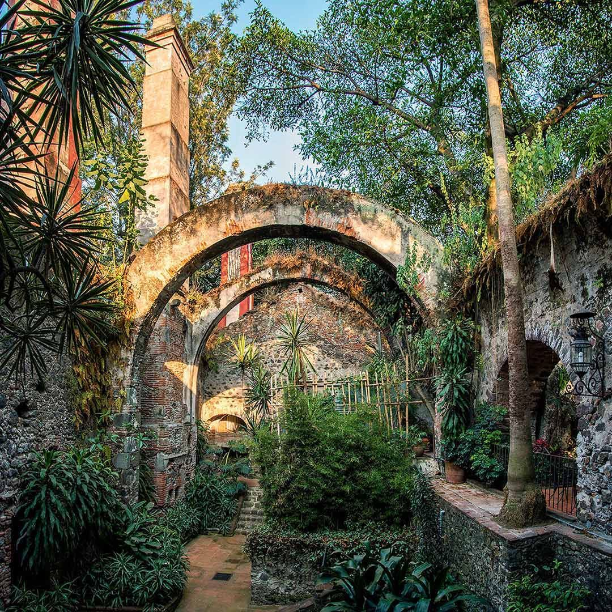

📸 Galería de Imágenes


🏛️ Historia y Reseña Completa
La Hacienda de Cortés —originalmente fundada bajo el nombre de San Antonio Atlacomulco— es una de las joyas coloniales más importantes de Morelos. Su historia comenzó en el siglo XVI, cuando la Corona Española le otorgó estas tierras a Hernán Cortés tras nombrarlo Marqués del Valle de Oaxaca. El recinto funcionó durante siglos como un próspero e importante ingenio azucarero. La propiedad permaneció bajo el control de los herederos de Cortés hasta los albores del siglo XX.
Hoy en día, este imponente monumento histórico ha sido cuidadosamente restaurado y acondicionado como un exclusivo hotel boutique y spa de lujo. Conserva intactos sus antiguos e históricos muros de piedra viva que son abrazados por raíces de árboles centenarios, sus legendarios canales de riego y sus pasajes coloniales. El espacio fusiona la elegancia del virreinato con una exuberante vegetación tropical, convirtiéndolo en un escenario idílico para el descanso, la gastronomía e importantes eventos sociales.